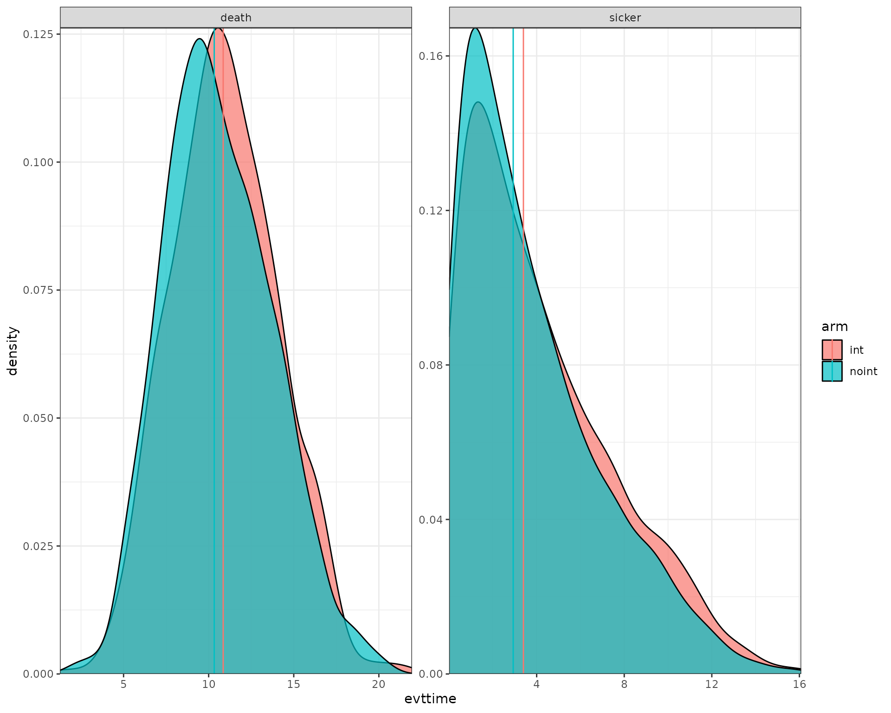

Example for a Sick-Sicker-Dead model - Random Number Streams & Luck Adjustment
Javier Sanchez Alvarez
May 28, 2025
Source:vignettes/articles/example_ssd_stream.Rmd
example_ssd_stream.RmdIntroduction
This document runs a discrete event simulation model in the context of a late oncology model to show how the functions can be used to generate a model in only a few steps.
When running a DES, it’s important to consider speed. Simulation based models can be computationally expensive, which means that using efficient coding can have a substantial impact on performance.
Main options
library(WARDEN)
library(dplyr)
#>
#> Attaching package: 'dplyr'
#> The following objects are masked from 'package:stats':
#>
#> filter, lag
#> The following objects are masked from 'package:base':
#>
#> intersect, setdiff, setequal, union
library(ggplot2)
library(kableExtra)
#>
#> Attaching package: 'kableExtra'
#> The following object is masked from 'package:dplyr':
#>
#> group_rows
library(purrr)General inputs with delayed execution
Initial inputs and flags that will be used in the model can be
defined below. We can define inputs that will only change across
scenarios (sensitivity_inputs), inputs which are common to
all patients (common_all_inputs) within a simulation,
inputs that are unique to a patient independently of the treatment
(e.g. natural time to death, defined in common_pt_inputs),
and inputs that are unique to that patient and that treatment
(unique_pt_inputs). Items can be included through the
add_item function, and can be used in subsequent items. All
these inputs are generated before the events and the reaction to events
are executed. Furthermore, the program first executes
common_all_inputs, then common_pt_inputs and
then unique_pt_inputs. So one could use the items generated
in common_all_inputs in unique_pt_inputs. Note
that inputs are “reset” after each patient, so if patient 1 arm “noint”
changes util.sick to be = 2, even if it’s a common
parameter for everyone, it would be reset to 1 for patient 1 arm
“int”.
Note that time to death is set in the common_pt_inputs, but it could
also just be set in the add_tte function explained below.
The user has full flexibility on how to implement this type of
inputs.
There are some auxiliary functions to help setting up inputs, like
pick_val_v and pick_val (and
pick_psa, see below the section on Sensitivity Analysis). Note that
pick_val_v and pick_val can be directly loaded
as parameters (in fact, a named list will be loaded directly by R). A
small tweak is needed if it’s the first item added, in which the item
list must be initiated by using add_item() (see below).
#We don't need to use sensitivity_inputs here, so we don't add that object
#Put objects here that do not change on any patient or intervention loop
common_all_inputs <-add_item(
util.sick = 0.8,
util.sicker = 0.5,
cost.sick = 3000,
cost.sicker = 7000,
cost.int = 1000,
coef_noint = log(0.2),
HR_int = 0.8,
drc = 0.035, #different values than what's assumed by default
drq = 0.035) #different values than what's assumed by default
#Put objects here that do not change as we loop through treatments for a patient
common_pt_inputs <- add_item(rnd_stream_a = runif(100), #arbitrary amount of random numbers to be used, should be >= max number of calls that use that random number (e.g., if item/event A requires 5 random numbers due to repeated calls, then at least 5 numbers should be generated )
rnd_stream_b = runif(100),
rnd_a = rnd_stream_a[1],
rnd_b = rnd_stream_b[1]
)
#Put objects here that change as we loop through treatments for each patient (e.g. events can affect fl.tx, but events do not affect nat.os.s)
unique_pt_inputs <- add_item(fl.sick = 1,
q_default = util.sick,
c_default = cost.sick + if(arm=="int"){cost.int}else{0}) Events
Add Initial Events
Events are added below through the add_tte function. We
use this function once applying to both interventions. We must define
several arguments: one to indicate the intervention, one to define the
names of the events used, one to define the names of other objects
created that we would like to store (optional, maybe we generate an
intermediate input which is not an event but that we want to save) and
the actual input in which we generate the time to event. Events and
other objects will be automatically initialized to Inf. We
draw the times to event for the patients. Note: the order of the
evts argument that appears first will be used as a
reference of the order in which to process events in the case of ties
(so “sick” would be processed before “sicker” if there is a tie in time
to event.)
Note that the model will use the evnets defined in evts
argument to look for the objects both defined in the input list and in
this expression to allocate time to events. If an event is declared in
evts but not defined elsewhere, then they would be assumed
TTE of Inf by default.
This chunk is a bit more complex, so it’s worth spending a bit of time explaining it.
The init_event_list object is populated by using the
add_tte function which applies to both arms, “int” strategy
and “noint” strategy. We first declare the start time to be
0. Note this could also be separated by arm if the user
wants to have more clarity using two add_tte functions
(i.e.,
add_tte(arm="noint"...) %>% add_tte(arm="int"...)).
We then proceed to generate the actual time to event. We use the
draw_tte() function to generate the time to event, though
one can set this up in any other way (e.g., using rexp).
One should always be aware of how the competing risks interact with each
other. While we have abstracted from these type of corrections here, it
is recommended to have an understanding about how these affect the
results and have a look at the competing risks/semi-competing risks
literature.
Add Reaction to Those Events
Once the initial times of the events have been defined, we also need
to declare how events react and affect each other. To do so, we use the
evt_react_list object and the add_reactevt
function. This function just needs to state which event is affected, and
the actual reaction (usually setting flags to 1 or 0, or creating
new/adjusting events).
There are a series of objects that can be used in this context to
help with the reactions. Apart from the global objects and flags defined
above, we can also use curtime for the current event time,
prevtime for the time of the previous event,
cur_evtlist for the named vector of events that is yet to
happen for that patient, arm for the current treatment in
the loop, evt for the current event being processed,
i expresses the patient iteration, and
simulation the specific simulation (relevant when the
number of simulations is greater than 1). Furthermore, one can also call
any other input/item that has been created before or create new ones.
For example, we could even modify a cost/utility item by changing it
directly, e.g. through
modify_item(list(cost.idfs.tx=500)).
| Item | What does it do |
|---|---|
curtime |
Current event time (numeric) |
prevtime |
Time of the previous event (numeric) |
cur_evtlist |
Named vector of events that is yet to happen for that patient (named numeric vector) |
evt |
Current event being processed (character) |
i |
Patient being iterated (numeric) |
arm |
Intervention being iterated (character) |
simulation |
Simulation being iterated (numeric) |
sens |
Sensitivity analysis being iterated (numeric) |
The functions to add/modify events and inputs use lists. Whenever
several inputs/events are added or modified, it’s recommended to group
them within one function, as it reduces the computation cost. So rather
than use two modify_event with a list of one element, it’s
better to group them into a single modify_event with a list
of two elements.
To modify/create items, WARDEN now allows to assign them directly in
the code, without the need to use modify_item and
modify_item_seq, which allows the code to run faster
(~30-35% faster if comparing against modify_item_seq, or
15-20% if comparing against modify_item). However, these
two functions, modify_item and
modify_item_seq, are still available to the user and will
keep working, and allow to modify and add items. Elements defined within
this function are not evaluated sequentially in modify_item
(i.e. defining
modify_item(list(fl.new = 1, var1 = fl.new * 5))) will give
an error if fl.new was not defined outside this function),
while modify_item_seq will do it sequentially at a slightly
bigger computational cost, so both are left as choices for the user.
Note that one can modify costs/utilities by using the construction
type_name_category, where type is either “qaly” or “cost”,
name is the name (e.g., “default”) and category is the category used
(e.g., “instant”), so one could pass cost_default_instant
and modify the cost.
modify_item and modify_item_seqallow to
modify and add items. Elements defined within this function are not
evaluated sequentially in modify_item (i.e. defining
modify_item(list(fl.new = 1, var1 = fl.new * 5))) will give
an error if fl.new was not defined outside this function),
while modify_item_seq will do it sequentially at a slightly
bigger computational cost, so both are left as choices for the user.
Note that one can modify costs/utilities by using the construction
type_name_category, where type is either “qaly” or “cost”,
name is the name (e.g., “default”) and category is the category used
(e.g., “instant”), so one could pass cost_default_instant
and modify the cost.
The list of relevant functions to be used within
add_reactevt are:
| Function | What does it do | How to use it |
|---|---|---|
modify_item() |
Adds & Modifies items/flags/variables for future events | modify_item(list("fl.idfs.ontx"=0,"fl.tx.beva"=0)) |
modify_item_seq() |
Adds & Modifies items/flags/variables for future events sequentially | modify_item_seq(list("fl.idfs.ontx"=0,"fl.tx.beva"=0)) |
new_event() |
Adds events to the vector of events for that patient | new_event(rep(list("ae"=curtime + 0.001),5)) |
modify_event() |
Modifies (or creates, with create_if_null = TRUE)
existing events by changing their time |
modify_event(list("os"=curtime +5, "ttot"=curtime+0.0001)) |
The model will run until curtime is set to
Inf, so the event that terminates the model (in this case,
os), should modify curtime and set it to
Inf.
Finally, note that there could be two different ways of accumulating
continuous outcomes, backwards (i.e., in the example below, we would set
q_default = util.sick at the sicker event, and modify the
q_default value in the death event) and forwards (as in the
example below). This option can be modified in the run_sim
function using the accum_backwards argument, which assumes
forwards by default.
We use in this case a luck adjustment as we update the death time to
event using the luck_adj function. The parameters go from
mean 12 to 10, and sd from 3 to 2, so we update the random number and
then we redraw the time to event. If instead we needed to reset the time
to event (in the case of repeated independent events), then we would set
rnd_b = random_stream_b[2] to regenerate the luck. Note
that if more occurences are expected to happen, then we would need to
keep track of the index to make sure to grab the right random number.
Additionally, for convergence purposes one may rely on quasi-random low
discrepancy numbers sequence algorithms such as a Sobol sequence, for
example through the sobol function in the
randtoolbox package.
evt_react_list <-
add_reactevt(name_evt = "sick",
input = {}) %>%
add_reactevt(name_evt = "sicker",
input = {
q_default <- util.sicker
c_default <- cost.sicker + if(arm=="int"){cost.int}else{0}
fl.sick <- 0
#We perform a luck adjustment randomly but being slightly more likely in the "noint" arm
if((runif(1) + ifelse(arm=="noint", 0.05,0) ) >0.8){
rnd_b <- luck_adj(prevsurv = 1 - pnorm(q=curtime,12,3), cursurv = 1 - pnorm(q=curtime,10,2), luck = rnd_b, condq = FALSE)
death <- max(0.0000001,qnorm(rnd_b, mean=10, sd=2))
}
}) %>%
add_reactevt(name_evt = "death",
input = {
q_default <- 0
c_default <- 0
curtime <- Inf
}) Costs and Utilities
Costs and utilities are introduced below. However, it’s worth noting that the model is able to run without costs or utilities.
Utilities/Costs/Other outputs are defined by declaring which object
belongs to utilities/costs/other outputs, and whether they need to be
discounted continuously or discretely (instantaneous). These will be
passed to the run_sim function.
Model
Model Execution
The model can be run using the function run_sim below.
We must define the number of patients to be simulated, the number of
simulations, whether we want to run a PSA or not, the strategy list, the
inputs, events and reactions defined above, utilities, costs and also if
we want any extra output and the level of ipd data desired to be
exported.
It is worth noting that the psa_bool argument does not
run a PSA automatically, but is rather an additional input/flag of the
model that we use as a reference to determine whether we want to use a
deterministic or stochastic input. As such, it could also be defined in
common_all_inputs as the first item to be defined, and the
result would be the same. However, we recommend it to be defined in
run_sim.
Note that the distribution chosen, the number of events and the interaction between events can have a substantial impact on the running time of the model.
Debugging can be implemented using the argument debug in
the run_sim function.
#Logic is: per patient, per intervention, per event, react to that event.
results <- run_sim(
npats=1000, # number of patients to be simulated
n_sim=1, # number of simulations to run
psa_bool = FALSE, # use PSA or not. If n_sim > 1 and psa_bool = FALSE, then difference in outcomes is due to sampling (number of pats simulated)
arm_list = c("int", "noint"), # intervention list
common_all_inputs = common_all_inputs, # inputs common that do not change within a simulation
common_pt_inputs = common_pt_inputs, # inputs that change within a simulation but are not affected by the intervention
unique_pt_inputs = unique_pt_inputs, # inputs that change within a simulation between interventions
init_event_list = init_event_list, # initial event list
evt_react_list = evt_react_list, # reaction of events
util_ongoing_list = util_ongoing,
cost_ongoing_list = cost_ongoing,
ipd = 1
)
#> Analysis number: 1
#> Simulation number: 1
#> Time to run simulation 1: 0.79s
#> Time to run analysis 1: 0.79s
#> Total time to run: 0.8sPost-processing of Model Outputs
Summary of Results
Once the model has been run, we can use the results and summarize
them using the summary_results_det to print the results of
the last simulation (if nsim = 1, it’s the deterministic
case), and summary_results_sim to show the PSA results
(with the confidence intervals). We can also use the individual patient
data generated by the simulation, which we collect here to plot in the
psa_ipd object.
summary_results_det(results[[1]][[1]]) #print first simulation
#> int noint
#> costs 59488.52 52247.19
#> dcosts 0.00 7241.34
#> lys 9.71 9.71
#> dlys 0.00 0.00
#> qalys 6.22 6.03
#> dqalys 0.00 0.19
#> ICER NA Inf
#> ICUR NA 39127.88
#> INMB NA 2012.09
#> costs_undisc 74923.32 66020.46
#> dcosts_undisc 0.00 8902.86
#> lys_undisc 11.97 11.97
#> dlys_undisc 0.00 0.00
#> qalys_undisc 7.55 7.32
#> dqalys_undisc 0.00 0.23
#> ICER_undisc NA Inf
#> ICUR_undisc NA 38696.51
#> INMB_undisc NA 2600.58
#> c_default 59488.52 52247.19
#> dc_default 0.00 7241.34
#> c_default_undisc 74923.32 66020.46
#> dc_default_undisc 0.00 8902.86
#> q_default 6.22 6.03
#> dq_default 0.00 0.19
#> q_default_undisc 7.55 7.32
#> dq_default_undisc 0.00 0.23
summary_results_sim(results[[1]])
#> int noint
#> costs 59,489 (59,489; 59,489) 52,247 (52,247; 52,247)
#> dcosts 0 (0; 0) 7,241 (7,241; 7,241)
#> lys 9.71 (9.71; 9.71) 9.71 (9.71; 9.71)
#> dlys 0 (0; 0) 0 (0; 0)
#> qalys 6.22 (6.22; 6.22) 6.03 (6.03; 6.03)
#> dqalys 0 (0; 0) 0.185 (0.185; 0.185)
#> ICER NaN (NA; NA) Inf (Inf; Inf)
#> ICUR NaN (NA; NA) 39,128 (39,128; 39,128)
#> INMB NaN (NA; NA) 2,012 (2,012; 2,012)
#> costs_undisc 74,923 (74,923; 74,923) 66,020 (66,020; 66,020)
#> dcosts_undisc 0 (0; 0) 8,903 (8,903; 8,903)
#> lys_undisc 12 (12; 12) 12 (12; 12)
#> dlys_undisc 0 (0; 0) 0 (0; 0)
#> qalys_undisc 7.55 (7.55; 7.55) 7.32 (7.32; 7.32)
#> dqalys_undisc 0 (0; 0) 0.23 (0.23; 0.23)
#> ICER_undisc NaN (NA; NA) Inf (Inf; Inf)
#> ICUR_undisc NaN (NA; NA) 38,697 (38,697; 38,697)
#> INMB_undisc NaN (NA; NA) 2,601 (2,601; 2,601)
#> c_default 59,489 (59,489; 59,489) 52,247 (52,247; 52,247)
#> dc_default 0 (0; 0) 7,241 (7,241; 7,241)
#> c_default_undisc 74,923 (74,923; 74,923) 66,020 (66,020; 66,020)
#> dc_default_undisc 0 (0; 0) 8,903 (8,903; 8,903)
#> q_default 6.22 (6.22; 6.22) 6.03 (6.03; 6.03)
#> dq_default 0 (0; 0) 0.185 (0.185; 0.185)
#> q_default_undisc 7.55 (7.55; 7.55) 7.32 (7.32; 7.32)
#> dq_default_undisc 0 (0; 0) 0.23 (0.23; 0.23)
summary_results_sens(results)
#> arm analysis analysis_name variable value
#> <char> <int> <char> <fctr> <char>
#> 1: int 1 costs 59,489 (59,489; 59,489)
#> 2: noint 1 costs 52,247 (52,247; 52,247)
#> 3: int 1 dcosts 0 (0; 0)
#> 4: noint 1 dcosts 7,241 (7,241; 7,241)
#> 5: int 1 lys 9.71 (9.71; 9.71)
#> 6: noint 1 lys 9.71 (9.71; 9.71)
#> 7: int 1 dlys 0 (0; 0)
#> 8: noint 1 dlys 0 (0; 0)
#> 9: int 1 qalys 6.22 (6.22; 6.22)
#> 10: noint 1 qalys 6.03 (6.03; 6.03)
#> 11: int 1 dqalys 0 (0; 0)
#> 12: noint 1 dqalys 0.185 (0.185; 0.185)
#> 13: int 1 ICER NaN (NA; NA)
#> 14: noint 1 ICER Inf (Inf; Inf)
#> 15: int 1 ICUR NaN (NA; NA)
#> 16: noint 1 ICUR 39,128 (39,128; 39,128)
#> 17: int 1 INMB NaN (NA; NA)
#> 18: noint 1 INMB 2,012 (2,012; 2,012)
#> 19: int 1 costs_undisc 74,923 (74,923; 74,923)
#> 20: noint 1 costs_undisc 66,020 (66,020; 66,020)
#> 21: int 1 dcosts_undisc 0 (0; 0)
#> 22: noint 1 dcosts_undisc 8,903 (8,903; 8,903)
#> 23: int 1 lys_undisc 12 (12; 12)
#> 24: noint 1 lys_undisc 12 (12; 12)
#> 25: int 1 dlys_undisc 0 (0; 0)
#> 26: noint 1 dlys_undisc 0 (0; 0)
#> 27: int 1 qalys_undisc 7.55 (7.55; 7.55)
#> 28: noint 1 qalys_undisc 7.32 (7.32; 7.32)
#> 29: int 1 dqalys_undisc 0 (0; 0)
#> 30: noint 1 dqalys_undisc 0.23 (0.23; 0.23)
#> 31: int 1 ICER_undisc NaN (NA; NA)
#> 32: noint 1 ICER_undisc Inf (Inf; Inf)
#> 33: int 1 ICUR_undisc NaN (NA; NA)
#> 34: noint 1 ICUR_undisc 38,697 (38,697; 38,697)
#> 35: int 1 INMB_undisc NaN (NA; NA)
#> 36: noint 1 INMB_undisc 2,601 (2,601; 2,601)
#> 37: int 1 c_default 59,489 (59,489; 59,489)
#> 38: noint 1 c_default 52,247 (52,247; 52,247)
#> 39: int 1 dc_default 0 (0; 0)
#> 40: noint 1 dc_default 7,241 (7,241; 7,241)
#> 41: int 1 c_default_undisc 74,923 (74,923; 74,923)
#> 42: noint 1 c_default_undisc 66,020 (66,020; 66,020)
#> 43: int 1 dc_default_undisc 0 (0; 0)
#> 44: noint 1 dc_default_undisc 8,903 (8,903; 8,903)
#> 45: int 1 q_default 6.22 (6.22; 6.22)
#> 46: noint 1 q_default 6.03 (6.03; 6.03)
#> 47: int 1 dq_default 0 (0; 0)
#> 48: noint 1 dq_default 0.185 (0.185; 0.185)
#> 49: int 1 q_default_undisc 7.55 (7.55; 7.55)
#> 50: noint 1 q_default_undisc 7.32 (7.32; 7.32)
#> 51: int 1 dq_default_undisc 0 (0; 0)
#> 52: noint 1 dq_default_undisc 0.23 (0.23; 0.23)
#> arm analysis analysis_name variable value
psa_ipd <- bind_rows(map(results[[1]], "merged_df"))
psa_ipd[1:10,] %>%
kable() %>%
kable_styling(bootstrap_options = c("striped", "hover", "condensed", "responsive"))| evtname | evttime | prevtime | pat_id | arm | total_lys | total_qalys | total_costs | total_costs_undisc | total_qalys_undisc | total_lys_undisc | lys | qalys | costs | lys_undisc | qalys_undisc | costs_undisc | c_default | q_default | c_default_undisc | q_default_undisc | nexttime | simulation | sensitivity |
|---|---|---|---|---|---|---|---|---|---|---|---|---|---|---|---|---|---|---|---|---|---|---|---|
| sick | 0.00 | 0.00 | 1 | int | 10.3 | 6.69 | 61100 | 78079 | 8.05 | 12.6 | 5.23 | 4.182 | 20910 | 5.76 | 4.610 | 23052 | 20910 | 4.182 | 23052 | 4.610 | 5.76 | 1 | 1 |
| sicker | 5.76 | 0.00 | 1 | int | 10.3 | 6.69 | 61100 | 78079 | 8.05 | 12.6 | 5.02 | 2.512 | 40189 | 6.88 | 3.439 | 55028 | 40189 | 2.512 | 55028 | 3.439 | 12.64 | 1 | 1 |
| death | 12.64 | 5.76 | 1 | int | 10.3 | 6.69 | 61100 | 78079 | 8.05 | 12.6 | 0.00 | 0.000 | 0 | 0.00 | 0.000 | 0 | 0 | 0.000 | 0 | 0.000 | 12.64 | 1 | 1 |
| sick | 0.00 | 0.00 | 2 | int | 10.9 | 5.75 | 82612 | 104438 | 7.13 | 13.6 | 1.07 | 0.857 | 4285 | 1.09 | 0.873 | 4365 | 4285 | 0.857 | 4365 | 0.873 | 1.09 | 1 | 1 |
| sicker | 1.09 | 0.00 | 2 | int | 10.9 | 5.75 | 82612 | 104438 | 7.13 | 13.6 | 9.79 | 4.895 | 78327 | 12.51 | 6.255 | 100073 | 78327 | 4.895 | 100073 | 6.255 | 13.60 | 1 | 1 |
| death | 13.60 | 1.09 | 2 | int | 10.9 | 5.75 | 82612 | 104438 | 7.13 | 13.6 | 0.00 | 0.000 | 0 | 0.00 | 0.000 | 0 | 0 | 0.000 | 0 | 0.000 | 13.60 | 1 | 1 |
| sick | 0.00 | 0.00 | 3 | int | 11.4 | 7.79 | 63583 | 84281 | 9.62 | 14.5 | 6.93 | 5.543 | 27714 | 7.92 | 6.332 | 31658 | 27714 | 5.543 | 31658 | 6.332 | 7.92 | 1 | 1 |
| sicker | 7.92 | 0.00 | 3 | int | 11.4 | 7.79 | 63583 | 84281 | 9.62 | 14.5 | 4.48 | 2.242 | 35869 | 6.58 | 3.289 | 52622 | 35869 | 2.242 | 52622 | 3.289 | 14.49 | 1 | 1 |
| death | 14.49 | 7.92 | 3 | int | 11.4 | 7.79 | 63583 | 84281 | 9.62 | 14.5 | 0.00 | 0.000 | 0 | 0.00 | 0.000 | 0 | 0 | 0.000 | 0 | 0.000 | 14.49 | 1 | 1 |
| sick | 0.00 | 0.00 | 4 | int | 12.4 | 6.77 | 91212 | 120927 | 8.67 | 16.1 | 1.95 | 1.560 | 7802 | 2.02 | 1.615 | 8076 | 7802 | 1.560 | 8076 | 1.615 | 2.02 | 1 | 1 |
We can also check what has been the absolute number of events per strategy.
| arm | evtname | n |
|---|---|---|
| int | death | 1000 |
| int | sick | 1000 |
| int | sicker | 839 |
| noint | death | 1000 |
| noint | sick | 1000 |
| noint | sicker | 895 |
Plots
We now use the data output to plot the histograms/densities of the simulation.
data_plot <- results[[1]][[1]]$merged_df %>%
filter(evtname != "sick") %>%
group_by(arm,evtname,simulation) %>%
mutate(median = median(evttime)) %>%
ungroup()
ggplot(data_plot) +
geom_density(aes(fill = arm, x = evttime),
alpha = 0.7) +
geom_vline(aes(xintercept=median,col=arm)) +
facet_wrap( ~ evtname, scales = "free") +
scale_y_continuous(expand = c(0, 0)) +
scale_x_continuous(expand = c(0, 0)) +
theme_bw()
We can also plot the patient level incremental QALY/costs.
data_qaly_cost<- psa_ipd[,.SD[1],by=.(pat_id,arm,simulation)][,.(arm,qaly=total_qalys,cost=total_costs,pat_id,simulation)]
data_qaly_cost[,ps_id:=paste(pat_id,simulation,sep="_")]
mean_data_qaly_cost <- data_qaly_cost %>% group_by(arm) %>% summarise(across(where(is.numeric),mean))
ggplot(data_qaly_cost,aes(x=qaly, y = cost, col = arm)) +
geom_point(alpha=0.15,shape = 21) +
geom_point(data=mean_data_qaly_cost, aes(x=qaly, y = cost, fill = arm), shape = 21,col="black",size=3) +
scale_y_continuous(expand = c(0, 0)) +
scale_x_continuous(expand = c(0, 0)) +
theme_bw()+
theme(axis.text.x = element_text(angle = 90, vjust = .5))
Sensitivity Analysis
Inputs
In this case, inputs must be created first to change across
sensitivity analysis. To do so, the item list
sensitivity_inputs can be used. In this case, we also use
pick_val_v which allows the model to automatically pick the
relevant value (no PSA, PSA or sensitivity analysis) based on the
corresponding boolean flags of psa_bool and sensitivity_bool. In this
case we also use the sens iterator for each sensitivity
analysis and the n_sensitivity which is an argument in
run_sim.
Note that we have then just changed how the inputs are handled in
common_all_inputs, but the same could be done with unique_pt_inputs, but
in those cases, as the inputs change per patient, the
pick_val_v or pick_val functions should be
applied within unique_pt_inputs to make sure they are evaluated when it
correspond.
Note that for the psa we are directly calling the distributions and
passing the parameters.Note also that the sens_name_used is
automatically computed by the engine and is accesible to the user (it’s
the name of the sensitivity analysis, e.g., “scenario 1”).
The indicator parameter in pick_val_v and
pick_val is used to determine which parameters are left “as
is” and which ones are to be substituted with the sensitivity value.
There are two ways to do this, either by setting it in a binary way (1
or 0), or by using the indicator as the number of the parameter values
to be varied (useful when several parameters are varied at the same
time, or only specific values of a vector are varied). This can be set
by using indicator_sens_binary argument.
Note that pick_val_v and pick_val can be
directly loaded as parameters (in fact, a named list will be loaded
directly by R). A small tweak is needed if it’s the first item added, in
which the item list must be initiated by using add_item()
(see below).
pick_psa can be used to select the correct PSA
distributions.
#Load some data
df_par <- list(parameter_name = c("util.sick","util.sicker","cost.sick","cost.sicker","cost.int","coef_noint","HR_int"),
base_value = c(0.8,0.5,3000,7000,1000,log(0.2),0.8),
DSA_min = c(0.6,0.3,1000,5000,800,log(0.1),0.5),
DSA_max = c(0.9,0.7,5000,9000,2000,log(0.4),0.9),
PSA_dist = c("rnorm","rbeta_mse","rgamma_mse","rgamma_mse","rgamma_mse","rnorm","rlnorm"),
a = list(0.8,0.5,3000,7000,1000,log(0.2),log(0.8)),
b = lapply(list(0.8,0.5,3000,7000,1000,log(0.2),log(0.8)), function(x) abs(x/10)),
scenario_1=c(0.6,0.3,1000,5000,800,log(0.1),0.5),
scenario_2=c(0.9,0.7,5000,9000,2000,log(0.4),0.9)
)
sensitivity_inputs <-add_item(
pos_indicator = sens - n_sensitivity*floor((sens-1)/n_sensitivity), # which position to use to put the value 1 in indicator
indicators = append(rep(0, length(df_par$parameter_name))[-pos_indicator],1,pos_indicator-1) #vector of indicators, value 0 everywhere except at sens, where it takes value 1
)
common_all_inputs <-add_item() %>%
add_item(
pick_val_v(base = df_par[["base_value"]],
psa = pick_psa(df_par[["PSA_dist"]],rep(1,length(df_par[["PSA_dist"]])),df_par[["a"]],df_par[["b"]]),
sens = df_par[[sens_name_used]],
psa_ind = psa_bool,
sens_ind = sensitivity_bool,
indicator = indicators,
names_out = df_par[["parameter_name"]]
)
)Model Execution
The model is executed as before, just adding the
sensitivity_inputs, sensitivity_names,
sensitivity_bool and n_sensitivity arguments.
Note that the total number of sensitivity iterations is given not by
n_sensitivity, but by n_sensitivity * length(sensitivity_names), so in
this case it will be 2 x n_sensitivity, or 2 x 7 = 14. For two scenario
analysis it would be 2 x 1 = 2, with the indicators
variable defined in the previous section taking value 1 for all the
variables altered in the scenario, and 0 otherwise.
results <- run_sim(
npats=100, # number of patients to be simulated
n_sim=1, # number of simulations to run
psa_bool = FALSE, # use PSA or not. If n_sim > 1 and psa_bool = FALSE, then difference in outcomes is due to sampling (number of pats simulated)
arm_list = c("int", "noint"), # intervention list
common_all_inputs = common_all_inputs, # inputs common that do not change within a simulation
common_pt_inputs = common_pt_inputs, # inputs that change within a simulation but are not affected by the intervention
unique_pt_inputs = unique_pt_inputs, # inputs that change within a simulation between interventions
init_event_list = init_event_list, # initial event list
evt_react_list = evt_react_list, # reaction of events
util_ongoing_list = util_ongoing,
cost_ongoing_list = cost_ongoing,
sensitivity_inputs = sensitivity_inputs,
sensitivity_names = c("DSA_min","DSA_max"),
sensitivity_bool = TRUE,
n_sensitivity = length(df_par$parameter_name),
input_out = c(df_par[["parameter_name"]])
)
#> Analysis number: 1
#> Simulation number: 1
#> Time to run simulation 1: 0.17s
#> Time to run analysis 1: 0.17s
#> Analysis number: 2
#> Simulation number: 1
#> Time to run simulation 1: 0.17s
#> Time to run analysis 2: 0.17s
#> Analysis number: 3
#> Simulation number: 1
#> Time to run simulation 1: 0.17s
#> Time to run analysis 3: 0.17s
#> Analysis number: 4
#> Simulation number: 1
#> Time to run simulation 1: 0.17s
#> Time to run analysis 4: 0.17s
#> Analysis number: 5
#> Simulation number: 1
#> Time to run simulation 1: 0.17s
#> Time to run analysis 5: 0.17s
#> Analysis number: 6
#> Simulation number: 1
#> Time to run simulation 1: 0.17s
#> Time to run analysis 6: 0.17s
#> Analysis number: 7
#> Simulation number: 1
#> Time to run simulation 1: 0.17s
#> Time to run analysis 7: 0.17s
#> Analysis number: 8
#> Simulation number: 1
#> Time to run simulation 1: 0.17s
#> Time to run analysis 8: 0.17s
#> Analysis number: 9
#> Simulation number: 1
#> Time to run simulation 1: 0.18s
#> Time to run analysis 9: 0.18s
#> Analysis number: 10
#> Simulation number: 1
#> Time to run simulation 1: 0.17s
#> Time to run analysis 10: 0.17s
#> Analysis number: 11
#> Simulation number: 1
#> Time to run simulation 1: 0.17s
#> Time to run analysis 11: 0.17s
#> Analysis number: 12
#> Simulation number: 1
#> Time to run simulation 1: 0.17s
#> Time to run analysis 12: 0.17s
#> Analysis number: 13
#> Simulation number: 1
#> Time to run simulation 1: 0.17s
#> Time to run analysis 13: 0.18s
#> Analysis number: 14
#> Simulation number: 1
#> Time to run simulation 1: 0.17s
#> Time to run analysis 14: 0.18s
#> Total time to run: 2.41sCheck results
We briefly check below that indeed the engine has been changing the corresponding parameter value.
data_sensitivity <- bind_rows(map_depth(results,2, "merged_df"))
#Check mean value across iterations as PSA is off
data_sensitivity %>% group_by(sensitivity) %>% summarise_at(c("util.sick","util.sicker","cost.sick","cost.sicker","cost.int","coef_noint","HR_int"),mean)
#> # A tibble: 14 × 8
#> sensitivity util.sick util.sicker cost.sick cost.sicker cost.int coef_noint
#> <int> <dbl> <dbl> <dbl> <dbl> <dbl> <dbl>
#> 1 1 0.6 0.5 3000 7000 1000 -1.61
#> 2 2 0.8 0.3 3000 7000 1000 -1.61
#> 3 3 0.8 0.5 1000 7000 1000 -1.61
#> 4 4 0.8 0.5 3000 5000 1000 -1.61
#> 5 5 0.8 0.5 3000 7000 800 -1.61
#> 6 6 0.8 0.5 3000 7000 1000 -2.30
#> 7 7 0.8 0.5 3000 7000 1000 -1.61
#> 8 8 0.9 0.5 3000 7000 1000 -1.61
#> 9 9 0.8 0.7 3000 7000 1000 -1.61
#> 10 10 0.8 0.5 5000 7000 1000 -1.61
#> 11 11 0.8 0.5 3000 9000 1000 -1.61
#> 12 12 0.8 0.5 3000 7000 2000 -1.61
#> 13 13 0.8 0.5 3000 7000 1000 -0.916
#> 14 14 0.8 0.5 3000 7000 1000 -1.61
#> # ℹ 1 more variable: HR_int <dbl>Model Execution, probabilistic DSA
The model is executed as before, just activating the psa_bool option
results <- run_sim(
npats=100,
n_sim=6,
psa_bool = TRUE,
arm_list = c("int", "noint"),
common_all_inputs = common_all_inputs,
common_pt_inputs = common_pt_inputs,
unique_pt_inputs = unique_pt_inputs,
init_event_list = init_event_list,
evt_react_list = evt_react_list,
util_ongoing_list = util_ongoing,
cost_ongoing_list = cost_ongoing,
sensitivity_inputs = sensitivity_inputs,
sensitivity_names = c("DSA_min","DSA_max"),
sensitivity_bool = TRUE,
n_sensitivity = length(df_par$parameter_name),
input_out = c(df_par[["parameter_name"]])
)
#> Analysis number: 1
#> Simulation number: 1
#> Time to run simulation 1: 0.18s
#> Simulation number: 2
#> Time to run simulation 2: 0.17s
#> Simulation number: 3
#> Time to run simulation 3: 0.18s
#> Simulation number: 4
#> Time to run simulation 4: 0.21s
#> Simulation number: 5
#> Time to run simulation 5: 0.17s
#> Simulation number: 6
#> Time to run simulation 6: 0.17s
#> Time to run analysis 1: 1.08s
#> Analysis number: 2
#> Simulation number: 1
#> Time to run simulation 1: 0.17s
#> Simulation number: 2
#> Time to run simulation 2: 0.17s
#> Simulation number: 3
#> Time to run simulation 3: 0.17s
#> Simulation number: 4
#> Time to run simulation 4: 0.17s
#> Simulation number: 5
#> Time to run simulation 5: 0.17s
#> Simulation number: 6
#> Time to run simulation 6: 0.16s
#> Time to run analysis 2: 1.03s
#> Analysis number: 3
#> Simulation number: 1
#> Time to run simulation 1: 0.18s
#> Simulation number: 2
#> Time to run simulation 2: 0.18s
#> Simulation number: 3
#> Time to run simulation 3: 0.17s
#> Simulation number: 4
#> Time to run simulation 4: 0.18s
#> Simulation number: 5
#> Time to run simulation 5: 0.17s
#> Simulation number: 6
#> Time to run simulation 6: 0.17s
#> Time to run analysis 3: 1.04s
#> Analysis number: 4
#> Simulation number: 1
#> Time to run simulation 1: 0.18s
#> Simulation number: 2
#> Time to run simulation 2: 0.17s
#> Simulation number: 3
#> Time to run simulation 3: 0.17s
#> Simulation number: 4
#> Time to run simulation 4: 0.18s
#> Simulation number: 5
#> Time to run simulation 5: 0.18s
#> Simulation number: 6
#> Time to run simulation 6: 0.18s
#> Time to run analysis 4: 1.06s
#> Analysis number: 5
#> Simulation number: 1
#> Time to run simulation 1: 0.36s
#> Simulation number: 2
#> Time to run simulation 2: 0.16s
#> Simulation number: 3
#> Time to run simulation 3: 0.17s
#> Simulation number: 4
#> Time to run simulation 4: 0.16s
#> Simulation number: 5
#> Time to run simulation 5: 0.17s
#> Simulation number: 6
#> Time to run simulation 6: 0.18s
#> Time to run analysis 5: 1.21s
#> Analysis number: 6
#> Simulation number: 1
#> Time to run simulation 1: 0.16s
#> Simulation number: 2
#> Time to run simulation 2: 0.17s
#> Simulation number: 3
#> Time to run simulation 3: 0.16s
#> Simulation number: 4
#> Time to run simulation 4: 0.17s
#> Simulation number: 5
#> Time to run simulation 5: 0.16s
#> Simulation number: 6
#> Time to run simulation 6: 0.16s
#> Time to run analysis 6: 0.98s
#> Analysis number: 7
#> Simulation number: 1
#> Time to run simulation 1: 0.17s
#> Simulation number: 2
#> Time to run simulation 2: 0.16s
#> Simulation number: 3
#> Time to run simulation 3: 0.19s
#> Simulation number: 4
#> Time to run simulation 4: 0.16s
#> Simulation number: 5
#> Time to run simulation 5: 0.18s
#> Simulation number: 6
#> Time to run simulation 6: 0.17s
#> Time to run analysis 7: 1.04s
#> Analysis number: 8
#> Simulation number: 1
#> Time to run simulation 1: 0.17s
#> Simulation number: 2
#> Time to run simulation 2: 0.17s
#> Simulation number: 3
#> Time to run simulation 3: 0.17s
#> Simulation number: 4
#> Time to run simulation 4: 0.17s
#> Simulation number: 5
#> Time to run simulation 5: 0.18s
#> Simulation number: 6
#> Time to run simulation 6: 0.16s
#> Time to run analysis 8: 1.02s
#> Analysis number: 9
#> Simulation number: 1
#> Time to run simulation 1: 0.17s
#> Simulation number: 2
#> Time to run simulation 2: 0.17s
#> Simulation number: 3
#> Time to run simulation 3: 0.16s
#> Simulation number: 4
#> Time to run simulation 4: 0.17s
#> Simulation number: 5
#> Time to run simulation 5: 0.16s
#> Simulation number: 6
#> Time to run simulation 6: 0.17s
#> Time to run analysis 9: 1.03s
#> Analysis number: 10
#> Simulation number: 1
#> Time to run simulation 1: 0.17s
#> Simulation number: 2
#> Time to run simulation 2: 0.17s
#> Simulation number: 3
#> Time to run simulation 3: 0.17s
#> Simulation number: 4
#> Time to run simulation 4: 0.17s
#> Simulation number: 5
#> Time to run simulation 5: 0.17s
#> Simulation number: 6
#> Time to run simulation 6: 0.18s
#> Time to run analysis 10: 1.03s
#> Analysis number: 11
#> Simulation number: 1
#> Time to run simulation 1: 0.17s
#> Simulation number: 2
#> Time to run simulation 2: 0.18s
#> Simulation number: 3
#> Time to run simulation 3: 0.18s
#> Simulation number: 4
#> Time to run simulation 4: 0.17s
#> Simulation number: 5
#> Time to run simulation 5: 0.18s
#> Simulation number: 6
#> Time to run simulation 6: 0.18s
#> Time to run analysis 11: 1.05s
#> Analysis number: 12
#> Simulation number: 1
#> Time to run simulation 1: 0.17s
#> Simulation number: 2
#> Time to run simulation 2: 0.18s
#> Simulation number: 3
#> Time to run simulation 3: 0.17s
#> Simulation number: 4
#> Time to run simulation 4: 0.18s
#> Simulation number: 5
#> Time to run simulation 5: 0.18s
#> Simulation number: 6
#> Time to run simulation 6: 0.17s
#> Time to run analysis 12: 1.05s
#> Analysis number: 13
#> Simulation number: 1
#> Time to run simulation 1: 0.21s
#> Simulation number: 2
#> Time to run simulation 2: 0.18s
#> Simulation number: 3
#> Time to run simulation 3: 0.17s
#> Simulation number: 4
#> Time to run simulation 4: 0.19s
#> Simulation number: 5
#> Time to run simulation 5: 0.17s
#> Simulation number: 6
#> Time to run simulation 6: 0.19s
#> Time to run analysis 13: 1.1s
#> Analysis number: 14
#> Simulation number: 1
#> Time to run simulation 1: 0.18s
#> Simulation number: 2
#> Time to run simulation 2: 0.17s
#> Simulation number: 3
#> Time to run simulation 3: 0.18s
#> Simulation number: 4
#> Time to run simulation 4: 0.18s
#> Simulation number: 5
#> Time to run simulation 5: 0.18s
#> Simulation number: 6
#> Time to run simulation 6: 0.18s
#> Time to run analysis 14: 1.08s
#> Total time to run: 14.79sCheck results
We briefly check below that indeed the engine has been changing the corresponding parameter value.
data_sensitivity <- bind_rows(map_depth(results,2, "merged_df"))
#Check mean value across iterations as PSA is off
data_sensitivity %>% group_by(sensitivity) %>% summarise_at(c("util.sick","util.sicker","cost.sick","cost.sicker","cost.int","coef_noint","HR_int"),mean)
#> # A tibble: 14 × 8
#> sensitivity util.sick util.sicker cost.sick cost.sicker cost.int coef_noint
#> <int> <dbl> <dbl> <dbl> <dbl> <dbl> <dbl>
#> 1 1 0.6 0.541 3068. 7509. 1036. -1.62
#> 2 2 0.762 0.3 3068. 7509. 1036. -1.62
#> 3 3 0.762 0.541 1000 7509. 1036. -1.62
#> 4 4 0.762 0.541 3068. 5000 1036. -1.62
#> 5 5 0.762 0.541 3068. 7509. 800 -1.62
#> 6 6 0.762 0.541 3066. 7506. 1036. -2.30
#> 7 7 0.761 0.541 3069. 7510. 1035. -1.61
#> 8 8 0.9 0.541 3068. 7509. 1036. -1.62
#> 9 9 0.762 0.7 3068. 7509. 1036. -1.62
#> 10 10 0.762 0.541 5000 7509. 1036. -1.62
#> 11 11 0.762 0.541 3068. 9000 1036. -1.62
#> 12 12 0.762 0.541 3068. 7509. 2000 -1.62
#> 13 13 0.762 0.541 3066. 7507. 1036. -0.916
#> 14 14 0.762 0.541 3068. 7509. 1036. -1.62
#> # ℹ 1 more variable: HR_int <dbl>